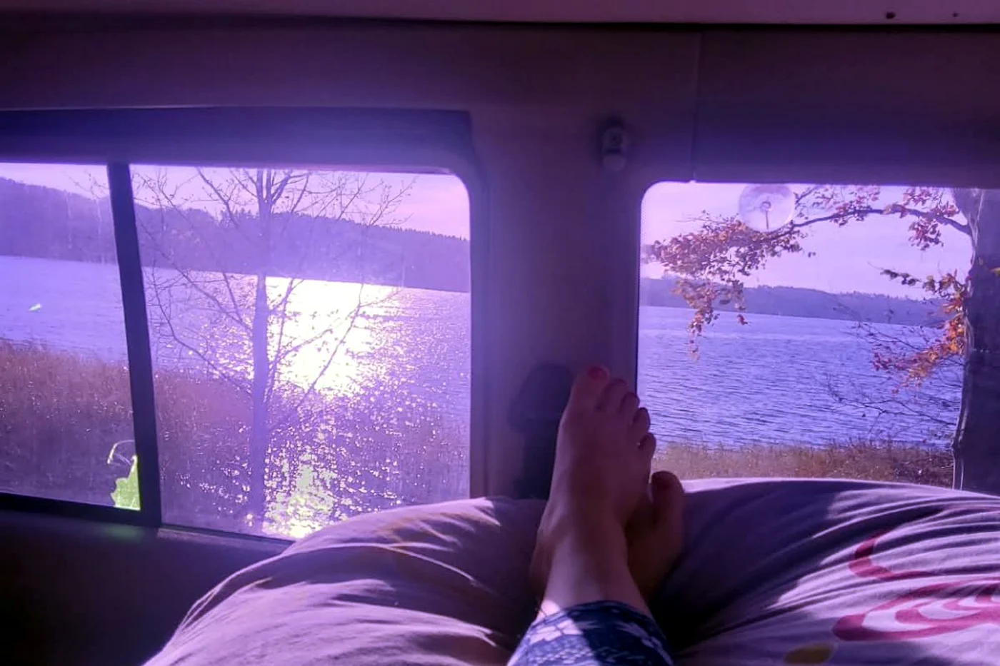

Gatos en la autocaravana: Cómo acostumbro a Timmy y Susi a viajar

¡Hola, soy Justine de Tussy Van! 💛
Cualquiera que vea a mis dos gatos se da cuenta rápidamente: sienten curiosidad por En cualquier caso. Timmy y Susi tienen aproximadamente un año. Los dos Las hembras son hermanas de la misma camada. Timmy lleva más tiempo pelaje gris-blanco, Susi es la hermana de pelo corto y blanco-grisáceo. A La bolsa abierta se inspecciona de inmediato, y una caja nueva dentro de unos pocos Segundos y en la ventana, los dos podían pasar horas Observa lo que ocurre afuera. En realidad, las mejores condiciones para Dos pequeños compañeros de viaje – ¿verdad?
Por supuesto, no es tan sencillo. Timmy y Susi no deberían De repente metidos en la furgoneta y emprendiendo un largo viaje puede llevarse conmigo. Para los gatos, un cambio de ubicación suele significar mucho más que para nosotros, los humanos. Nuevos olores, ruidos de motor, movimientos, extraños Gente, perros en el camping y una rutina diaria poco habitual Puede ser emocionante, pero también puede causar estrés.
Por eso, quiero abordar el tema de forma lenta y honesta. Mi objetivo no es convertirlos en "gatos de camping de Instagram" bajo ningún concepto. Quiero saber si realmente se sienten cómodos en la autocaravana puede. Timmy y Susi marcan el ritmo. Si una de las hermanas Claramente muestra que viajar no es para ellos, entonces eso también lo es Una respuesta que respetaré.
Primero, la preparación, Luego la aventura
Antes de que empiece la primera visita guiada real, tengo un Chequeo médico en el veterinario. Al hacerlo, quisiera aclarar si Timmy y Susi está físicamente en condiciones para los viajes en coche, qué vacunas y cuáles La protección contra parásitos para nuestros destinos de viaje planificados tiene sentido y qué Puedo hacerlo en caso de posible mareo por viaje. medicamentos o Nunca daría tranquilizantes por mi cuenta. Si un Si un gato escupe fuerte, vomita o entra en pánico en el coche, ¿es cierto? Lo hablé con el veterinario.
Para viajes al extranjero, los documentos están incluidos. Dentro de la UE Los gatos generalmente necesitan un pasaporte válido de la UE para mascotas, un Vacunación antirrábica válida y una etiqueta única de microchip. Para una primera vacunación contra la rabia, el chip debe administrarse previamente convertirse en; además, un tiempo de espera de al menos 21 días antes de que la vacunación sea reconocida para viajar. Es importante también que el chip no solo está configurado, sino también en un Registro de mascotas con mis datos de contacto actuales. Antes en cada viaje a través de una frontera, reviso las normas del país de destino y también las condiciones para el viaje de regreso, especialmente en Países no pertenecientes a la UE.
Por tanto, mi carpeta incluye:
- Pasaportes de mascotas de la UE y documentos de vacunación
- Números de chip y datos de registro
- Datos de contacto de mi clínica de mascotas
- Direcciones de consultas veterinarias o clínicas veterinarias en el destino
- Información sobre enfermedades conocidas, alergias y Medicamentos
- Fotos recientes de ambos gatos para emergencias
Paso 1: La caja de transporte se convierte en tu lugar favorito
La preparación no empieza en la furgoneta, sino en casa. Muchos gatos Solo ves la caja de transporte cuando vas al veterinario. Entonces será Lo recogieron del sótano, metieron al gato dentro y, tras la cita, desaparece de nuevo. De este modo, la caja puede alcanzar rápidamente la señal de advertencia lo será.
Por eso queremos que las cajas permanezcan permanentemente abiertas en el apartamento De pie. Cada gato recibe su propia caja resistente con un manta familiar. Golosinas, juguetes o parte del día a día Las raciones de pienso hacen que el lugar sea interesante. Al principio, es suficiente si el Gato mirando o olfateando la caja. Más tarde, son recompensados cuando entra, se sienta dentro y, en algún momento, se alinea brevemente junto a la puerta Mantente tranquilo.
No voy a forzar nada ni empujar a los gatos hacia dentro. Prefiero practicar dos o tres minutos al día y escuchar con un buen Espera un momento. Solo cuando la caja abierta se haya vuelto completamente normal, Cierro la puerta unos segundos, la abro de nuevo y Aumenta el tiempo poco a poco.
Para el trayecto en coche, planeo dos separados, lo suficientemente grandes Cajas de transporte. Timmy y Susi son hermanos de camada y duermen en casa Encantado de acurrucarse juntos. Sin embargo, incluso gente conocida Los hermanos reaccionan de forma diferente bajo estrés. Cajas separadas ofrecen ambos un área protegida y evitar que un gato inquieto Otros también están presionados.
Paso 2: Practica el arnés y la correa sin presión de tiempo
Un arnés no sustituye la caja de transporte durante el trayecto. Sin embargo, puede resultar útil más adelante en un lugar seguro. Por lo tanto, Primero me gustaría dar a Timmy y Susi una buena posición Acostúmbrate a los arneses para gatos a prueba de escape.
Al principio, los platos simplemente yacen junto a la zona de descanso. Entonces toca brevemente la parte trasera, luego se aplica durante unos segundos. Solo cuando el gato se mueve normalmente, come y juega con él llega la correa ligera para acompañarla. Tirar o tirar sería completamente incorrecto Espacio. Un gato no camina automáticamente como un perro a pie – y No tiene por qué serlo.
Si Timmy y Susi quieren salir más tarde está por verse. Quizá disfruten de una pequeña ronda de exploración tranquila. Quizá Se sienten mucho más cómodos detrás de una ventana asegurada. Ambos lo son Está bien. Afuera, los platos siempre permanecen bajo supervisión; conectado y solo, no dejaría ni un solo gato atrás.
Paso 3: El de pie Descubre la furgoneta
Una vez que la caja y los platos son familiares, es tu primera vez entrando en el furgoneta estacionada – inicialmente sin motor en marcha. Las puertas y ventanas son cerrado o asegurado de forma fiable con redes seguras para gatos. El A los gatos se les permite olfatear con calma y decidir por sí mismos si quieren usar Quisiera venir a su caja abierta.
Ayudan los aromas familiares: sus mantas, una cesta familiar, un Rascador y un juguete de casa. Me mantendré tranquilo, dejo la radio y ruidos fuertes y termina la primera visita tras unos cuantos minutos relajados. La próxima vez, puede que haya un pequeño Comida o una ronda de juegos en la furgoneta. Por tanto, el vehículo debe separarse del otro vehículo Paso a paso, conviértete en un lugar familiar.
Solo después arranco el motor sin arrancar. Aquí también comienza El entrenamiento con una sesión muy corta. Quédate con Timmy y Susi Calma, la primera mini-ronda viene después de otro día – quizá solo Una vuelta a la manzana. Después de eso, volvemos a casa. Las rutas solo se extienden si el nivel anterior es realmente bueno funcionó.
Mi configuración planeada es así:
- caja de transporte abierta en el apartamento
- Breve tiempo en la caja cerrada
- Visita en una furgoneta fija con el motor apagado
- unos minutos en la furgoneta estacionaria con el motor encendido
- Viaje muy corto en la caja asegurada
- Conduce entre diez y veinte minutos
- Excursión tranquila de un día sin pernocta
- Una noche de ensayo cerca de casa
- Primer fin de semana corto de acampada con ayuno Opción de devolución
Este plan no es un calendario. Quizá una etapa funcione después de dos Días, quizá necesitemos varias semanas. Seré Timmy y Susi individualmente, porque la estrecha conexión como hermanas significa No automáticamente que ambas situaciones se experimenten de la misma manera. ¿Qué clase de Susi fácil ya puede ser demasiado para Timmy – o viceversa.
Durante el Viajar: La seguridad está por encima de la libertad
Por muy tentadora que pueda parecer la imagen de un gato en el salpicadero: Durante el trayecto, mis gatos se quedan en su casa segura Cajas de transporte. Un gato que deambula libremente puede detenerse durante la frenada de emergencia resultar gravemente herido, quedar atrapado bajo los pedales o bajo el conductor distraer.
Los puestos deben mantenerse firmes y no deben resbalar ni volcarse. Los expertos suelen recomendar el piso trasero del vehículo como un lugar seguro un asiento delantero. Si una caja se sujeta con el cinturón de seguridad, debe Son expresamente adecuados para este tipo de cierre. Lo revisaré Según las especificaciones del fabricante para mi caja específica y mi Vehículo.
Durante los descansos, se aplica un orden fijo: todas las puertas y ventanas primero Entonces abre la caja. Nunca abro en una área de descanso al mismo tiempo, la puerta del vehículo y la caja de transporte. Una sola Un momento de shock podría ser suficiente para crear un gato en un entorno desconocido huye.
Una pequeña casa en Ruedas
En una autocaravana, los gatos necesitan no solo un sitio, sino varios zonas claramente separadas. Incluso en un espacio pequeño, estoy planeando:
- Un lugar protegido para descanso y retiro por gato
- un punto de vista elevado en la ventana asegurada
- una pequeña superficie de arañazos
- Cuencos separados para alimentar y para beber
- Cajas de arena fácilmente accesibles
- despeja caminos para que ningún gato bloquee al otro en una esquina can
Los objetos sueltos se almacenan antes de cada viaje. agentes de limpieza, Medicamentos, cables, basura, comida y plantas tóxicas para los gatos están fuera de alcance. Las ventanas y las escotillas del techo solo pueden abrirse Si su mecha es realmente a prueba de gatos. Una normalidad Las mosquiteras no resisten necesariamente a un gato decidido.
La temperatura es especialmente importante. Una autocaravana puede hacerlo rápidamente Calentando el tiempo peligrosamente. Sombra, una ventana abierta o un Los ventiladores no tienen garantía de que el interior se mantenga seguro. En con el clima cálido, por eso no dejo a los gatos solos en el aparcamiento Vehículo. Planifico viajes a horas más frescas del día siempre que puedo, Controla la temperatura y proporciona siempre agua fresca.
caja de arena En la autocaravana: limpia, familiar y accesible
La caja de arena no es un problema secundario, sino crucial Un factor de bienestar. Los gatos suelen reaccionar de forma sensible ante un nuevo Tipo de arena, otro tipo de baño o una ubicación desfavorable. Por eso primero llevo exactamente la ropa de cama que traen de casa saber.
Para hogares con varios gatos, la recomendación general es: a Baño por gato más uno adicional, distribuido entre varios Lugares. En la furgoneta, eso es espacialmente difícil. Para las primeras pruebas, me gustaría Por tanto, averigua si hay dos inodoros compactos pero suficientemente grandes puede acomodarse de forma sensata. No deberían hacerlo directamente Estar uno al lado del otro, estar al alcance en todo momento y lo suficientemente lejos de la comida Y mantén el agua alejada. Si no hay espacio suficiente, soluciona No solo culpo a los gatos, sino que estoy hablando de diseño adecuado con una clínica veterinaria con experiencia en gatos o Asesoramiento conductual.
También debe llevarse una pala para esparcir, suficiente Arena de repuesto, bolsas de residuos sellables, una alfombrilla de paja y un Limpiador enzimático para pequeños accidentes. Limpio el Al menos por la mañana y por la tarde, así como inmediatamente cuando sea necesario. Si Un gato de repente deja de orinar, se esfuerza mucho, a menudo sin éxito Va al baño o se ve sangre en la orina, esto no Problema de viaje que esperar y ver, pero una emergencia veterinaria.
Comida y agua: cambiar lo menos posible
En el primer viaje, no quiero comer la comida al mismo tiempo Switch. La comida habitual viene porcionada y empaquetada herméticamente con. Por unos días más, llevaré un respaldo conmigo por si acaso Están en carretera durante un periodo no planificado o la conocida variedad en el destino vacacional no está disponible.
Cada gato tiene su propio cuenco. Ofrezco agua en varios Lugares tranquilos y nunca justo al lado de la caja de arena. La comida húmeda también puede aportar líquido, siempre que los gatos están acostumbrados a. Para viajes más largos, planifico descansos seguros en la vehículo cerrado, en el que puedo proporcionar agua y baño. Antes de la primera visita, también hablo con la clínica veterinaria de cómo Ajusta los horarios de alimentación de forma sensata al viaje, especialmente cuando cuando un gato tiende a sentirse mareado.
Las hermanas también tienen enfoques diferentes en el cuidado del abrigo Necesidades. Regularmente cepillo el pelaje largo de Timmy cuando voy y después de pequeñas rebabas, suciedad o enredos iniciales Busca. El abrigo corto de Susi es más fácil de cuidar, pero también debe ser Ella trajo un cepillo suave en su equipaje. Después de una salida, compruebe en ambas patas, pelaje y piel en garrapatas o pequeñas Lesiones.
Mi lista de equipaje para Dos gatos en la autocaravana
Para asegurarse de que no falte nada antes de la salida, se coloca una jaula fija para gatos la furgoneta:
- dos cajas de transporte resistentes y de tamaño adecuado
- dos mantas familiares y zonas separadas para dormir
- Arneses antiescape y correas ligeras
- Pasaportes de mascotas de la UE, números de chip y contactos veterinarios
- Comida familiar más reserva
- varios cuencos robustos y agua potable suficiente
- Cajas de arena para gatos, arenas conocidas, pala y alfombra de arena
- Bolsas para heces, toallas de papel y limpiador enzimático
- Una alfombrilla para rascar y algunos juguetes conocidos
- Cepillo, removedor de garrapatas y recomendado por el veterinario Control de parásitos
- medicamentos individuales y una pequeña farmacia de viaje para consulta veterinaria
- Toallas, mantas de repuesto y compresas lavables
- Fotos actuales y mis datos de contacto en cada casilla
Un rastreador GPS puede ser una ayuda adicional más adelante, pero reemplaza Ni el microchip ni el registro. Seguro que está en el lugar correcto Debe asegurarse un arnés y no debe obstruir al gato.
Por lo que puedo deducir Se vuelve demasiado
No todo maullido significa pánico. No obstante, me gustaría Observa cuidadosamente el lenguaje corporal. Las señales de advertencia pueden incluir jadeos intensos, babeo persistente, vómitos, diarrea, intentos frenéticos de escapar, orejas permanentemente adheridas, pupilas muy grandes, temblorosas, congeladas o Agresividad inusual. Aunque un gato haya estado expuesto durante mucho tiempo ni comer, ni beber, ni usar el baño, eso lo tomo En serio.
Entonces no es: "Tiene que pasar ya." Rompo el ejercicio volver al último nivel relajado y soltar lo fuerte o Aclarar quejas recurrentes y causas de salud. El bienestar Los gatos son más importantes que cualquier ruta planificada.
La primera El camping es deliberadamente poco espectacular
Para la primera noche, no busco un cuadrado grande y ruidoso con Entretenimiento, muchos perros y constantes idas y venidas. Mejor es un Un lugar tranquilo y sombreado cerca de la casa. Así puedo Para en cualquier momento si un gato no puede calmarse.
Antes de reservar, aclaro si se permiten gatos y qué normas se aplican. Aplica. En el lugar, vigilo los perros que andan libres, el tráfico o los tóxicos Plantas, ventanas abiertas y todos los huecos posibles en la furgoneta. Al cargar y Al salir se aplica una "regla de cierre" fija: Una puerta es solo abierto cuando Timmy y Susi están seguros en sus cubículos o en los platos están bajo control.
La primera salida no tiene por qué ser espectacular. Cuando ambos comen, bebiendo, usando el baño, durmiendo y, curiosamente, saliendo por la ventana Mira, eso ya es un gran éxito para mí.
Mi Conclusión: Quizá nuestra próxima aventura comience tranquilamente Paws
Acampar con gatos no es un proyecto que para mí pueda hacerse un fin de semana está listo. Es un poco de tiempo para conocerse: ¿Cómo van Timmy y ¿Susi en la caja? ¿Qué les hace el motor? Encuentra un ¿Lugar seguro para dormir? ¿Pueden también estar en entornos desconocidos? ¿Relajarse?
Con aproximadamente un año, Timmy y Susi son jóvenes, curiosos y Capaces de aprender – pero a pesar de sus orígenes compartidos, son dos diferentes personalidades. Precisamente por eso entreno Pequeños pasos, con cosas familiares, recompensas y muchos Opciones de retiro. No hay una fecha fija en la que "terminen" "Gatos de acampada" deben serlo.
Quizá algún día nos sentemos juntos junto a un lago tranquilo, mientras dos narices curiosas observaban el mundo tras la ventana asegurada Observa. Quizá nuestro primer gran viaje llegue mucho más tarde Tenga lugar. Y quizá alguno de ellos te muestre que la casa es preferible. Entonces eso también será aceptado.
Porque para mí, Vanlife auténtico, no significa para cada plan para cada Para cumplir el premio. Significa libertad – y eso también se aplica a la mía Gatos.
Nos vemos pronto y que tengas un buen viaje,
tu Tussy 💛🐾
Fuentes y más información para el equipo editorial
- felino Asociación de Médicos Veterinarios: Transporte de gatos en coche (2025)
- Internacional Cuidado del Gato: Viajar con el Gato
- Europeo Unión: Viajar con mascotas en Europa
- TASSO: Vacaciones con un gato
- Ministerio Federal del poder judicial: § 22 StVO – Obtención de cargos
- FelineVMA: Reglas básicas para las cajas de arena y recursos